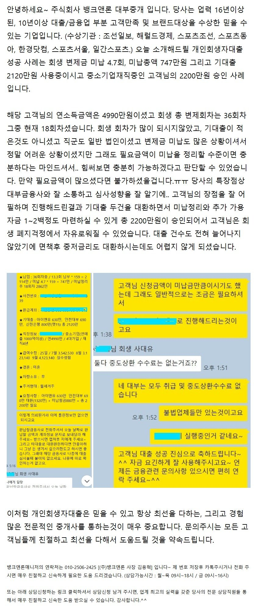
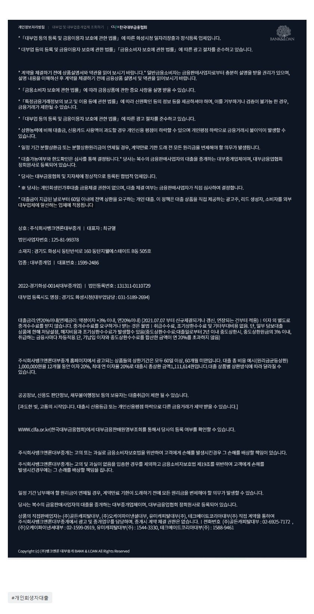

[개인회생자대출] 변제금미납4.7회(747만), 기대출 2120만, 중소기업재직중 2200만 승인사례.

상담신청 -> https://cafe.naver.com/cityman88/29497
[개인회생자대출] 뱅크앤론 YoTube 영상 모음.
1. 뱅크앤론의 개인회생자대출이 좋은이유[YouTube]
2. [개인회생자대출] 미납과다(7.51회 1846만미납)고객 2천만승인사례 [YouTube]
3. [개인회생자대출사례] 기대출4건, 기부결과다 고객님의 2천만원 승인사례. (YouTube)
4. [개인회생자대출사례] 타 대부금융사 모두 부결된 고객님, 1500만원 승인사례.
5. [개인회생자대출사례] 미납6.98회로 총 미납액 1천만이상고객, 1200만원 승인사례.
6. [재회생자대출사례] 재 회생, 변제금 60회차 중 7회납부, 1000만 승인사례.
7. [개인회생자대출성공사례] 재직기간 2개월, 1천만 승인사례.
8. [개시결정자대출사례] 회생인가 전, 개시결정 상태에서도 개인회생대출 성공사례.
9. [개인회생대출사례] 변제금 미납3회와 기대출 세건, 미납정리 및 대출 한건으로 통합에 성공한사례.
10. [개인회생대출사례] 36회중 13회차, 기대출 5건을 3건으로 줄여준 성공사례!!

https://cafe.naver.com/cityman88/309178